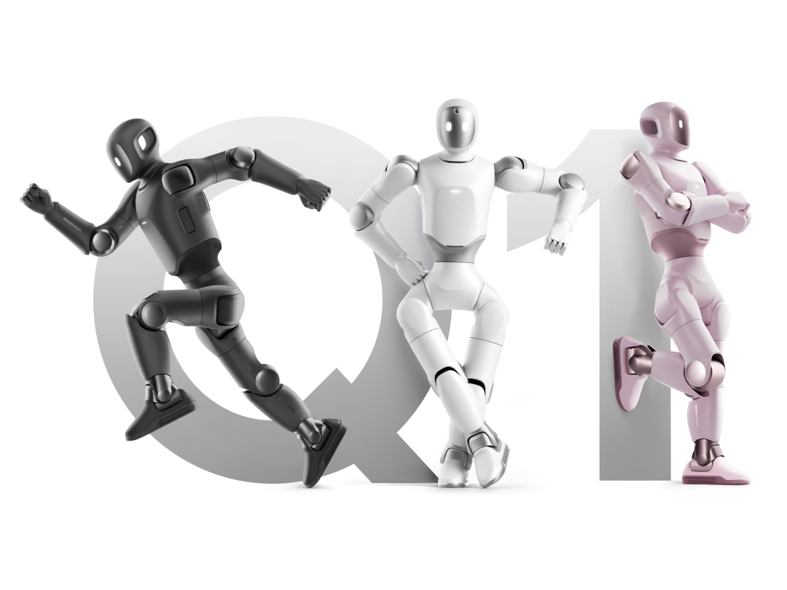

Persönlicher HumanoidPersonal humanoid个人人形机器人
Q1
88 cm, 22 Gelenke, ein Gedächtnis — der kleine Humanoid für Gespräch, Spiel und Lernen.88 cm, 22 joints, a memory — the small humanoid for conversation, play and learning.88 厘米、22 个关节、会记事——陪聊、陪玩、陪学习的小个子人形机器人。
88 cm22 Freiheitsgrade215 WhSDK*
Preis auf Anfrage
Angebot mit Konfiguration
Details